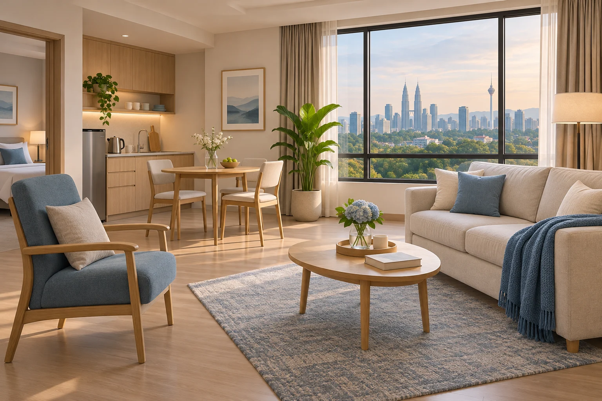

Sunway City / MALAYSIA
Sunway Medical Centre
Explore a medical campus in Sunway City, with dedicated information for international patients, care coordinators and visit planning.
Ask About an AppointmentGETTING TO KNOW THE HOSPITAL
Start with
the right questions.
Sunway’s international patient website provides information on care coordination, rooms, payment arrangements and getting to the hospital.
Visit the official hospital website ↗Information reference checked 16 November 2026. Confirm current services and arrangements directly with the hospital.
Explore your
care enquiry.
The hospital assesses your needs and confirms
the appropriate specialist and appointment.

Illustrative accommodation, not a bookable property.
PLAN AROUND YOUR APPOINTMENT
Your visit.
Your family.
The whole picture.
- Ask what reports are needed before the appointment.
- Request an estimate with inclusions and exclusions.
- Discuss room preferences and accompanying family.
- Check airport transfer and local transport arrangements.
- Confirm food, language and accessibility needs.
Before you decide.
How do I request an appointment?
Begin with an enquiry. We coordinate the request; the hospital confirms the specialist, appointment and any reports it needs.
Will I know my treatment costs in advance?
You can request a hospital estimate. The final cost may change after assessment or changes in care. Clarify what is included and who receives payment.
Can my family stay nearby?
Tell us who is accompanying you and your accommodation needs. Property options, rates and transport are confirmed individually.
Is MediConnect an official representative of this hospital?
This preview presents hospital information for exploration. It does not claim a confirmed hospital partnership or exclusive representation.